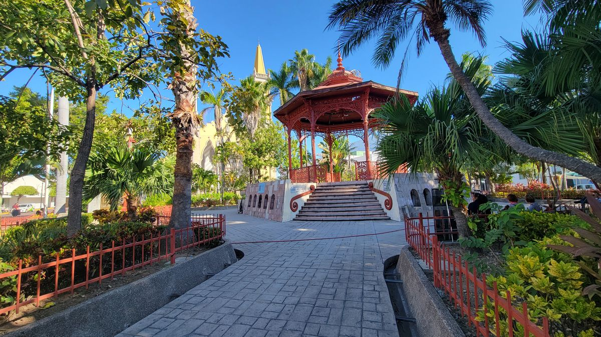
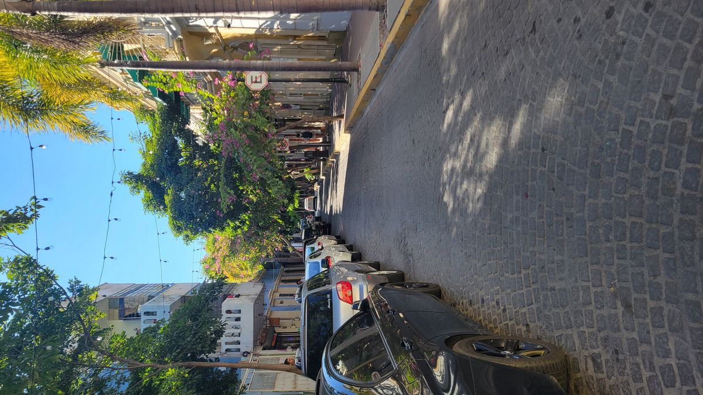
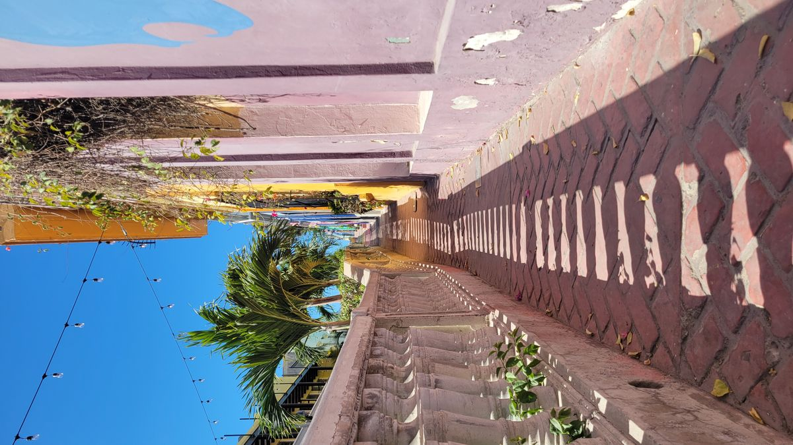
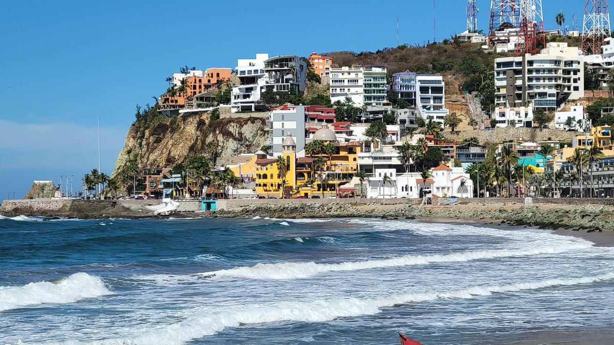

Mazatlán
Mazatlán was the first city that surprised me.
Mazatlán started its life as an outpost of smugglers and pirates. The Mexican government opened a customs office in the 1850’s legitimizing the settlement. It rose to prominence in the 1950’s as a resort destination along with other cities along the Mexican Riviera like Acapulco. Violence and unrest in the 90’s and early 2000’s made Mazatlán not tourist friendly for many years. But in 2015, after reaching a security agreement with the Mexican government, the cruise ships returned and Mazatlán has been rebuilding itself to its former glory.
Mazatlán has 2 main areas that tourists will find themselves spending their time in. The Zona Dorada or Gold Zone which you will find familiar if your other destinations have been tourism hubs like Los Cabos or Cancun. High Rise hotels, overpriced restaurants and Señor Frogs.
The other is the historical center. My guidebook has talked about how this place was seeing a resurgence in recent years, but I was more than surprised by what I had stumbled up. With its tiled plazas, lined with restaurants and cafés. To its cobblestone and palm lined streets, you could convince yourself that you were in the south of Spain or France, not the southern neighbor of the United States.
Of course, as usual I had arrived early in the morning before any potential crowds would arrive to be able enjoy the area in relative calm. Only a few restaurants and cafés were open and I grabbed a coffee and began my stroll. It was obvious this area was still up and coming, but I imagine it’s hard to justify more than was there since the primary customer is cruise ship passengers who only spend a few hours. There were galleries showcasing the works of local artisans, and a lot were at reasonable prices. Handmade leather crafts and pottery were available for under $50 and if I was on a different trip, one with a sooner return date I probably would have picked up a few curios to show off at home.



After spending 2 weeks along the coasts of Baja I was admittedly beached out and decided to find something else to do besides lounge on the beach. A popular recommendation was El Parqe Faro. A hike up a mountain that would provide a panoramic view of the Bahia Mazatlan and get up close to a working light house (modern lighthouses are not nearly as beautiful as their predecessors seen along the coasts of north America.)
It was midday, and not exactly the best time to go hiking up a steep mountain but armed with a bottle of water and sunscreen I plugged the address into my GPS and trudged along the rocky cliffs to the Park Entrance. Even now, the views were stunning looking down onto the waves crashing against the rocks and the tide pools formed by the lower tides of the day.
I arrived at the park where I was told that walking the path was free, which was good because I didn’t realize there might be a charge at all and began the trudge up the winding and steep path. The trail was paved and even had steps in steeper parts so the 2km was a breeze, although there was no breeze, battling against the mid-day sun was the worse aspect of the hike.
The views from the top were wide and far but looking down on the industrial harbor, seeing dozens of high-rise hotels in various states of construction and large orange and white antennas sitting atop the hillside, I preferred the scenes from the street below.

I haven’t been on this journey for very long, but will have to say that Mazatlán is a must do on anyone’s Mexican itinerary. Although its primary group of tourists may only come for a few hours, between the white sand beaches, the historical center and various tours and activities, one could easily spend 3-4 days there and not be bored. I was also told by a cab driver that Mazatlán hosts a Carnival every year which is supposed to rival those in Brazil and New Orleans, although I missed that by a few weeks. Maybe I’ll return one day to see that.